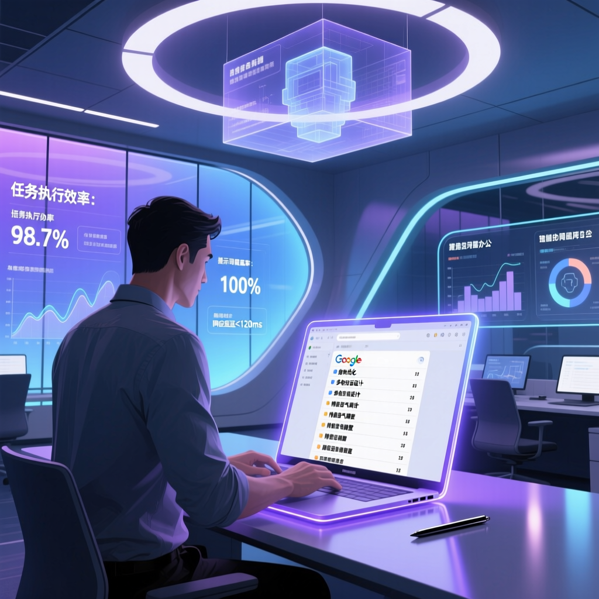

附 4 大職場實戰案例：Gmail 回信、試算表資料清洗、會議紀錄整理、日曆行程規劃

利用Google Docs建立提示詞庫可有效改善Gemini的操作體驗，具備三大優勢：查詢方便、維持對話連貫性、資料夾分類管理。
客服人員能夠藉助預設好的回信模板快速響應客戶詢問，同時保持個人風格的一致性，大幅縮短回覆時間。
面對大量待處理的資訊，透過簡單地引用事先準備好的公式集，即可輕鬆實現自動化資料處理。
會後自動生成的文字記錄往往格式混亂，利用自定義規則可以快速轉換成符合公司標準的版本。
出差前只需輸入目的地及日期等基本資訊，系統便能自動生成詳細的旅行計劃，包括交通建議和費用估算。
| 維度 | Gemini 側邊欄 | Google Docs 提示詞庫 |
|---|---|---|
| 查詢效率 | 需逐一翻找 | 關鍵詞秒搜 |
| 上下文維持 | 每次需重新描述 | 文件內完整保留 |
| 分類管理 | 無結構 | 資料夾層級管理 |
| 協作共享 | 難以分享 | 團隊即時共用 |
| 版本控制 | 無 | 修訂歷史完整 |
| 自訂程度 | 受限於介面 | 完全自由編輯 |
Google 推出 Gemini AI 助手，初步整合至 Workspace
用戶反映 Gems 側邊欄操作繁瑣，使用體驗有待改善
業界開始探索用 Google Docs 管理提示詞的可能性
Gmail、試算表、會議紀錄、日曆等實戰場景驗證完成
成為企業提升 AI 協作效率的標準做法之一
研究指出，將Gemini的提示詞庫遷移至Google Docs平臺是一項極具前瞻性的創新舉措。首先，這種做法最直接的好處是提升了查詢效率。使用者只需開啟特定文件，即可迅速找到所需的提示資訊，無需再從Gemini側邊欄逐一翻找，大大節省了時間成本。
其次，該方案還有助於保持溝透過程中的上下文聯絡，對於需要多次呼叫不同功能完成同一任務的情況尤其有利。例如，在處理郵件時，可以先使用某個預設模板自動生成回復草稿，然後在同一視窗內繼續新增其他相關指令，如資料分析或文案編輯，整個過程流暢無縫。
此外，透過Google Drive對這些提示詞進行分類儲存，使得長期管理和更新變得更加容易。比如，將所有與銷售相關的材料集中放在一個資料夾下，便於隨時取用；而針對特定客戶或專案建立專門的子目錄則能進一步增強組織結構的清晰度。
充分整合 Google Workspace 與 AI 技術之間的互補關係，從而創造出更加人性化的互動體驗。
— 業界分析師盡管這套系統已經顯示出巨大潛力，但在某些高階功能領域仍存在侷限性，例如即時協作時的反應速度、以及跨平臺同步的穩定性等，未來有待進一步完善。
隨著數字化轉型步伐加快，如何更好地整合各類軟體工具成為企業面臨的重要課題之一。基於目前的實踐成果，業內普遍看好Google Docs作為提示詞管理平臺的前景。不過，專家也提醒說，任何新興技術的普及都伴隨著挑戰，因此建議相關開發者密切關注使用者反饋，不斷最佳化產品效能。